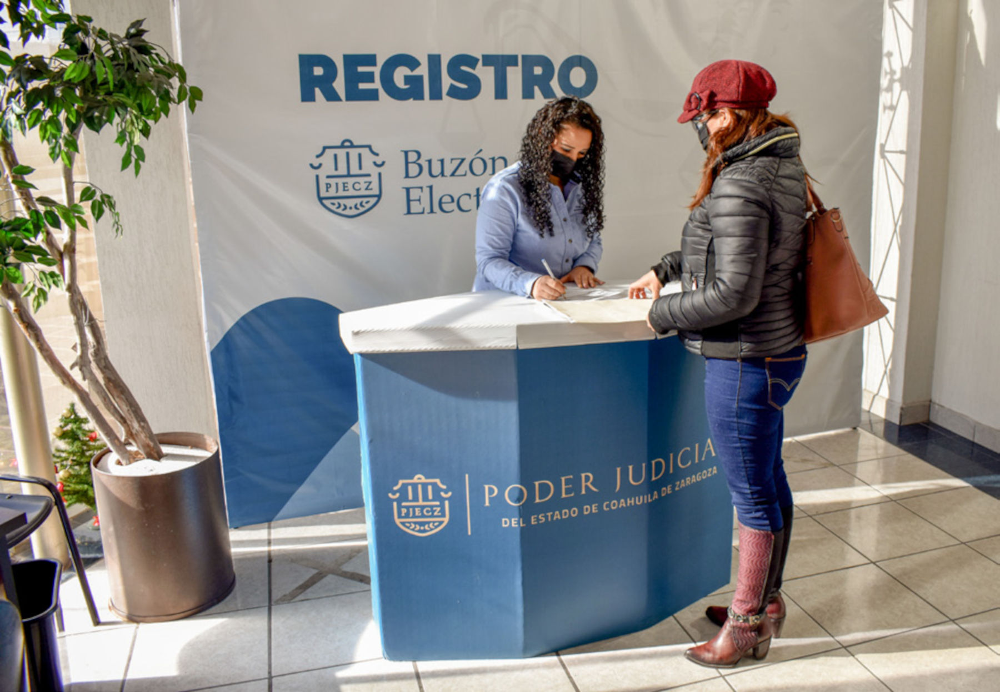
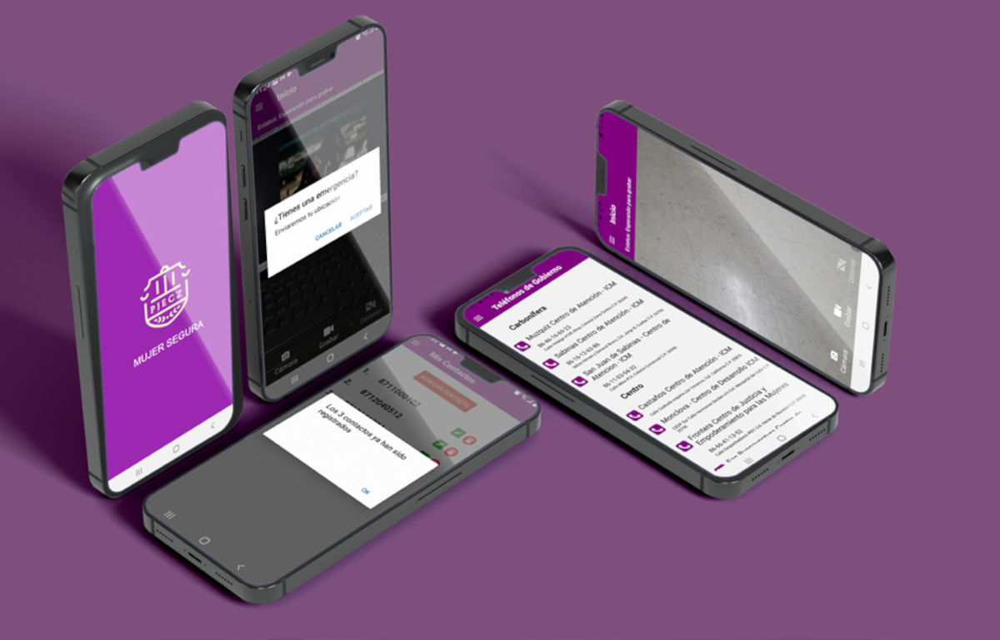
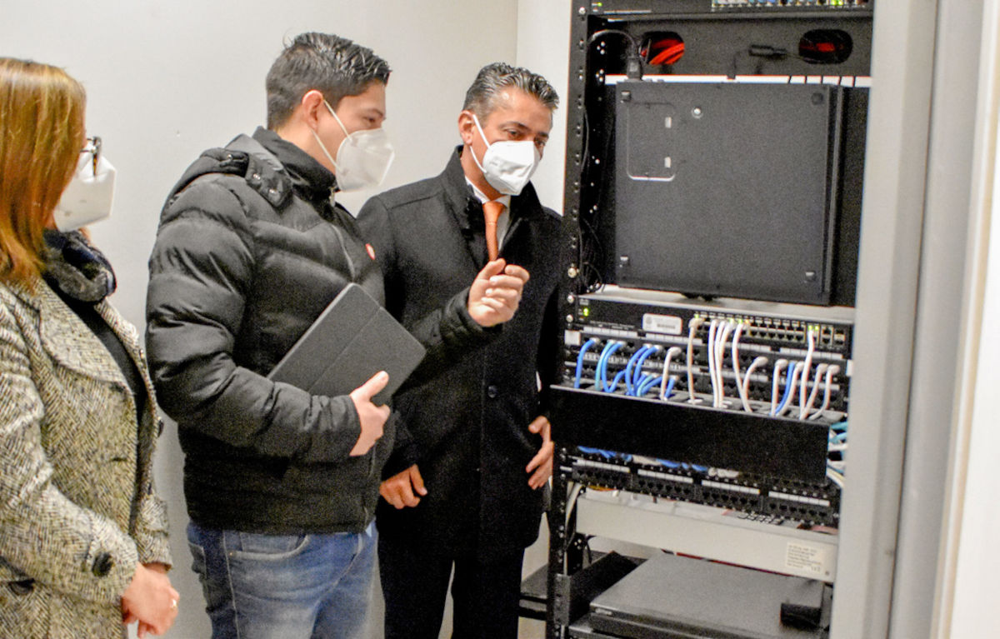
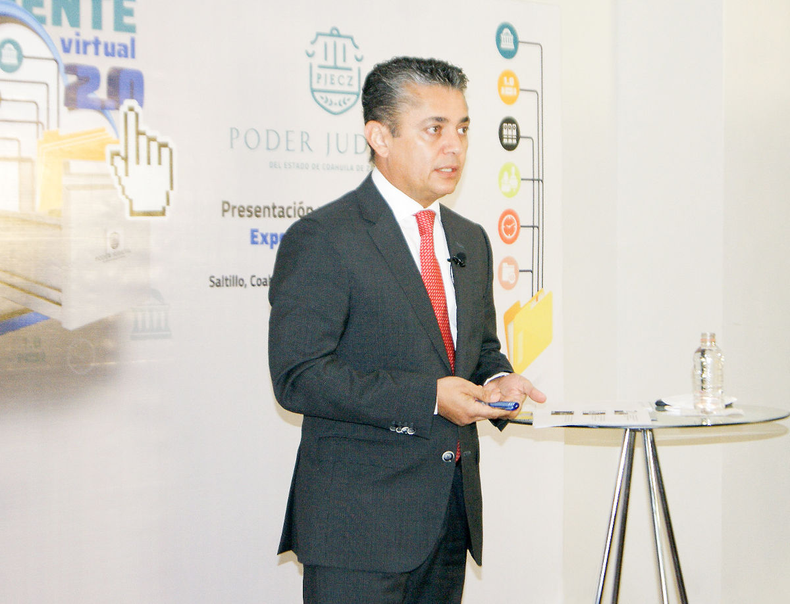
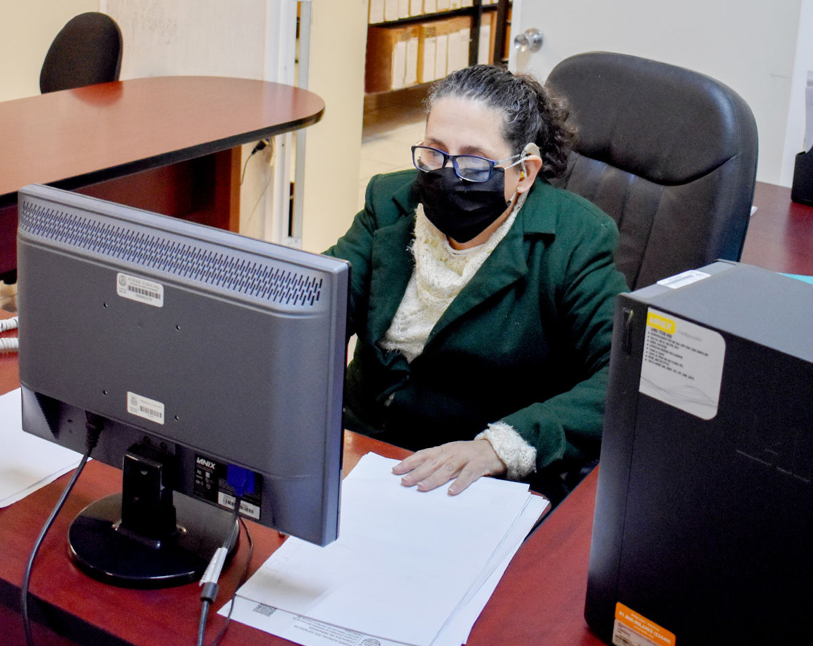

En el Poder Judicial alentamos y promovemos la innovación, gracias a las herramientas digitales hoy la justicia es más accesible a la ciudadanía.
Transición hacia la justicia digital
Uno de los objetivos del Poder Judicial, en cuanto al uso y aprovechamiento de la tecnología, ha sido la utilización de medios que faciliten y reduzcan el tiempo en la prestación de los servicios que ofrecemos, garantizando un efectivo acceso a la justicia.
La Constitución Política del Estado de Coahuila de Zaragoza dispone en el artículo 154 que los procedimientos judiciales se pueden tramitar a través de un Sistema Digital confiable. Por tal motivo, este año dimos un paso histórico hacia la Justicia Digital a través de la construcción de la plataforma Poder en Línea, la cual integra sistemas y programas informáticos que han facilitado el acceso a la justicia de las y los usuarios, entre los que destacan: el Sistema de Citas en Línea, el Buzón Electrónico de Demandas y Promociones, el Expediente Virtual 2.0 y el Sistema Integral de Búsqueda de Expedientes y Digitalización.
Sistema de Citas en Línea
El Consejo de la Judicatura ha sido un actor estratégico para la implementación de los mecanismos electrónicos mencionados y de la Justicia Digital. Al respecto emitió el Acuerdo C-077/2020, en sesión celebrada el 3 de junio, a través del cual se implementa el Sistema de Citas mediante la plataforma en línea del Poder Judicial del Estado de Coahuila de Zaragoza.
El Sistema de Citas en Línea, puesto en marcha el 10 de junio, es una plataforma amigable y sencilla que permite a toda persona usuaria —que cuente con un correo electrónico— registrarse y programar citas en nuestros órganos jurisdiccionales, oficialías de partes y sedes del Archivo Judicial. Además, ayuda a estas unidades en la planeación de sus actividades diarias y servicios que deberán brindar a las y los justiciables. Durante su periodo de funcionamiento se registraron seis mil 105 usuarias y usuarios, y se agendaron 70 mil 674 citas.
Tabla 1. Programación de Citas en Línea, por tipo de trámite
| Trámite | Cantidad de citas |
|---|---|
| Revisión de expedientes | 44,067 |
| Tramitación de oficios/edictos/exhortos | 7,203 |
| Citas con actuarios | 4,302 |
| Expedición de copias certificadas | 1,178 |
| Devolución de documentos | 2,156 |
| Entregas de cheques y certificados de depósito | 831 |
| Cita con Juez | 2,313 |
| Ratificaciones | 5,005 |
| Entrega de promociones en Oficialía de Buzón Electrónico | 20 |
| Expedición de copia simple | 301 |
| Citas para Registro de Buzón Electrónico | 1,709 |
| Entrega de demandas iniciales y anexos | 1,589 |
| Total | 70,674 |
Fuente: Dirección de Innovación de la Oficialía Mayor. Poder Judicial del Estado de Coahuila de Zaragoza. 2020.

Buzón Electrónico para Demandas y Promociones
Mediante el Acuerdo C-086/2020 emitido por el Pleno del Consejo de la Judicatura, en sesión celebrada el 3 de julio, se instauró el Buzón Electrónico de Demandas y Promociones del Poder Judicial del Estado de Coahuila de Zaragoza.
Esta plataforma en línea resulta una opción alternativa para la presentación electrónica de demandas iniciales y promociones dirigidas a los juzgados de primera instancia del Poder Judicial, así como al Tribunal de Conciliación y Arbitraje.
Para dar certidumbre a los envíos realizados con esta herramienta, el usuario se registra con cita previa en el módulo más cercano a él, presentando su documentación oficial, al tiempo que recibe un número de identificación personal, mismo que cambiará cada vez que haga uso de la plataforma para enviar sus demandas y promociones. Posteriormente, estos envíos son registrados en los sistemas de gestión para juzgados y oficialías de partes para continuar con el trámite correspondiente.
Durante el periodo de implementación de este buzón, se registraron dos mil 168 personas usuarias y 15 mil 124 envíos de demandas iniciales o promociones.
Tabla 2. Demandas iniciales o promociones recibidas en el Buzón Electrónico, por Distrito Judicial
| Distrito Judicial | Envíos de demandas iniciales o promociones |
|---|---|
| Acuña | 927 |
| Monclova | 1,612 |
| Parras de la Fuente | 31 |
| Río Grande | 1,608 |
| Sabinas | 833 |
| Saltillo | 5,207 |
| San Pedro de las Colonias | 140 |
| Torreón | 4,766 |
| Total | 15,124 |
Fuente: Dirección de Innovación de la Oficialía Mayor. Poder Judicial del Estado de Coahuila de Zaragoza. 2020.
Expediente Virtual 2.0
En sesión celebrada el 29 de octubre, el Pleno del Consejo de la Judicatura emitió el Acuerdo C-126/2020, mediante el cual se aprobaron las reglas para la operación del Expediente Virtual 2.0 del Poder Judicial del Estado de Coahuila de Zaragoza, toda vez que el trámite más solicitado por las y los usuarios en los juzgados de primera instancia de este poder público es la revisión de expedientes.
En nuestro Sistema de Citas en Línea más de la mitad de los trámites registrados obedecen a este servicio. Desde hace cinco años se encuentra en operación la herramienta Expediente Virtual, la cual tiene como objetivo la consulta de la versión electrónica de los expedientes, aunque solo funcionaba en algunos distritos judiciales y únicamente para las materias civil y familiar tradicional.
Este año desarrollamos e implementamos la versión 2.0 del Expediente Virtual, la cual funciona para todos los distritos judiciales y todas las materias. Este sistema requirió una nueva arquitectura de intercambio de datos para enlazar nuestros sistemas de gestión, además de ofrecer mayor velocidad y una mejor experiencia al usuario.
Para el uso de esta herramienta las personas interesadas deben contar con una cuenta de Buzón Electrónico y enviar una promoción donde soliciten autorización para el expediente virtual del asunto a consultar mediante este sistema. A la fecha contamos con 13 mil 71 expedientes autorizados.
Tabla 3. Expedientes autorizados mediante la plataforma Expediente Virtual 2.0, por Distrito Judicial
| Distrito Judicial | Expedientes autorizados |
|---|---|
| Acuña | 180 |
| Monclova | 1,062 |
| Parras de la Fuente | 26 |
| Río Grande | 1,235 |
| Sabinas | 525 |
| Saltillo | 8,223 |
| San Pedro de las Colonias | 119 |
| Torreón | 1,701 |
| Total | 13,071 |
Fuente: Dirección de Innovación de la Oficialía Mayor. Poder Judicial del Estado de Coahuila de Zaragoza. 2020.
Sistema Integral de Búsqueda de Expedientes y Digitalización
Con fecha del 29 de octubre, el Pleno del Consejo de la Judicatura del Estado emitió el Acuerdo C-127/2020, mediante el cual se implementa el Sistema Integral de Búsqueda de Expedientes y Digitalización (SIBED). Mismo que se trabajó de manera conjunta entre la Dirección de Innovación de la Oficialía Mayor y el Archivo Judicial General.
Así, iniciamos la modernización de la gestión de nuestro archivo; como primera etapa realizamos el levantamiento físico de 150 mil expedientes de los distritos judiciales de Saltillo y Torreón, correspondientes a los años de 2015 a 2020, a los cuales se les colocó un código electrónico de identificación (código QR) que permite enlazar información sobre el expediente o documento sujeto a consulta.
El SIBED nos permitirá tener control sobre la cadena de resguardo de cada expediente, además de estandarizar el proceso de gestión del Archivo Judicial General, que nos llevará a la certificación ISO 30301: 2019.
Portal de Pagos en Línea
Durante el 2020 diseñamos el Portal de Pagos en Línea, el cual estará disponible próximamente en nuestro sitio web. Con esta herramienta se podrá realizar la remuneración de los servicios que ofrece el Poder Judicial de una manera rápida, sencilla y segura. Además de facilitar la gestión de nuestros trámites y servicios hacia la ciudadanía, reducirá la necesidad de traslados por parte de las y los usuarios del sistema de justicia.
Rediseño del sitio web
Este año también rediseñamos nuestro sitio web con el objetivo de hacerlo más accesible, seguro, responsivo y con la posibilidad de visualizarse desde cualquier tipo de dispositivo electrónico con rapidez en los tiempos de carga. El resultado es un portal que incorpora las mejores prácticas y tecnologías, fácil de mantener, actualizar y escalar sus diferentes ramas dependiendo de las necesidades de la institución. Diariamente recibimos hasta dos mil 500 visitas, la mayoría provenientes de nuestro estado; 48 por ciento de ellas se realiza desde un teléfono móvil. La analítica proporcionada por Google® nos ubica con un tiempo promedio de carga de menos de un segundo por página.
Publicación de Listas de Acuerdos, Versión Pública de las Sentencias y Edictos
Como parte del rediseño del sitio web, incorporamos una nueva herramienta para consulta de Listas de Acuerdos, Versión Pública de las Sentencias y Edictos. Esta opción es dinámica y responsiva, lo que permite que sea consultada fácilmente desde cualquier dispositivo electrónico.
Tabla 4. Publicación de Listas de Acuerdos, Versión Pública de las Sentencias y Edictos en el sitio web del PJECZ
| Tipo de publicación | Número de publicaciones |
|---|---|
| Listas de acuerdos | 11,280 |
| Versión Pública de Sentencias | 7,883 |
| Edictos | 6,539 |
| Total | 25,702 |
Fuente: Dirección de Innovación de la Oficialía Mayor. Poder Judicial del Estado de Coahuila de Zaragoza. 2020.
Sistemas de Gestión Judicial
Actualización y mantenimiento de los Sistemas de Gestión Judicial
Realizamos las labores de mantenimiento y actualización funcional y de seguridad en los sistemas de gestión: Plataforma de Administración e Impartición Integral de Justicia (PAIIJ) y Sistema Integral de Gestión (SIGE), que actualmente operan en los órganos jurisdiccionales de primera instancia y que dan servicio a 923 usuarias y usuarios. Durante el año que se informa se recibieron 469 mil 572 trámites o documentos y se realizaron 525 mil 464 acuerdos dentro de estos sistemas.
Tabla 5. Documentos y trámites recibidos, y acuerdos realizados, a través de los Sistemas de Gestión Judicial del PJECZ
| Distrito Judicial | SIGE: Documentos/ Trámites recibidos | SIGE: Acuerdos realizados | PAIIJ Familiar y Penal: Documentos/ Trámites recibidos | PAIIJ Familiar y Penal: Acuerdos realizados | Total: Documentos/ Trámites recibidos | Total: Acuerdos realizados |
|---|---|---|---|---|---|---|
| Acuña | 7,590 | 6,492 | 12,238 | 17,340 | 19,828 | 23,832 |
| Monclova | 33,397 | 40,217 | 19,605 | 25,370 | 53,002 | 65,587 |
| Parras de la Fuente | 8,574 | 6,442 | 2,333 | 2,836 | 10,907 | 9,278 |
| Río Grande | 17,080 | 16,042 | 8,951 | 10,495 | 26,031 | 26,537 |
| Sabinas | 10,085 | 9,868 | 7,202 | 8,348 | 17,287 | 18,216 |
| Saltillo | 13,2539 | 129,305 | 64,441 | 74,087 | 196,980 | 203,392 |
| San Pedro de las Colonias | 9,311 | 8,972 | 5,299 | 7,711 | 14,610 | 16,683 |
| Torreón | 93,552 | 113,981 | 37,375 | 47,958 | 130,927 | 161,939 |
| Total | 312,128 | 331,319 | 157,444 | 194,145 | 469,572 | 525,464 |
Fuente: Dirección de Innovación de la Oficialía Mayor. Poder Judicial del Estado de Coahuila de Zaragoza. 2020
Firmado electrónico y Juzgado cero papel
Mediante una interconexión entre nuestro Motor de Firma Electrónica y los Sistemas de Gestión Judicial, logramos el firmado electrónico de documentos, acuerdos y sentencias dentro de los mismos. Esta funcionalidad nos permite transitar de un expediente virtual a un expediente electrónico, donde los documentos digitales poseen los mismos efectos legales y administrativos que aquellos signados con firma autógrafa.
En ese sentido, desarrollamos el modelo Juzgado Cero Papel, el cual implica que tanto los documentos que se emiten desde el órgano jurisdiccional como aquellos enviados por las y los usuarios del sistema de justicia sean digitales, lo que permite prescindir de la impresión o manejo de documentos físicos. Este modelo será implementado gradualmente durante 2021 en las instancias jurisdiccionales del Poder Judicial del Estado de Coahuila de Zaragoza.

APP Mujer Segura
Dentro del marco de la creación de los Juzgados Especializados en Violencia Familiar desarrollamos la aplicación Mujer Segura para teléfonos móviles, la cual entrará en funcionamiento durante el primer trimestre de 2021; esta aplicación permitirá a las mujeres reportar en línea situaciones de violencia familiar o de género a través de alertas georreferenciadas y en tiempo real, para su atención y seguimiento por las autoridades competentes.
Dicha aplicación utiliza la herramienta AWS Rekognition (inteligencia artificial de reconocimiento facial desarrollada por Amazon®) para identificar el género del usuario y únicamente se activa si la persona que la pretende usar es mujer. En caso de no poder validar el género, invita al usuario a comunicarse a una línea de atención por Whatsapp®.
La implementación de esta novedosa herramienta brinda la posibilidad de enviar alertas de urgencia inmediatamente después de instalarse, sin necesidad de registro; y podrá funcionar sin necesidad de conexión al internet, almacenando información de los eventos (ubicación, audio y video) en una base de datos interna y protegida, que al detectar la conexión sincronizará la identificación del acontecimiento.
Según el modelo del dispositivo, se podrán habilitar métodos alternativos de activación de emergencia (por ejemplo, sacudir el teléfono). La aplicación está diseñada para funcionar en cualquier teléfono inteligente.
Desahogo de audiencias mediante videoconferencia
El 10 de abril se dictó la primera sentencia en una audiencia mediante videoconferencia en el estado, lo que nos colocó como pioneros a nivel nacional en esta modalidad; y a su vez fue la primera signada usando el Motor de Firma Electrónica del Poder Judicial del Estado de Coahuila de Zaragoza. Este año, como una acción ante la contingencia sanitaria y para dar continuidad a los trabajos realizados por los juzgados de primera instancia y tribunales distritales, celebramos nueve mil 290 audiencias mediante videoconferencia y 766 vía telefónica. Cabe destacar que en materia penal más de la mitad de las audiencias celebradas son bajo esta modalidad.
Tabla 6. Audiencias celebradas a través de videoconferencia o vía telefónica, por Distrito Judicial
| Distrito Judicial | Audiencias mediante videoconferencia | Audiencias telefónicas |
|---|---|---|
| Acuña | 674 | 7 |
| Monclova | 2,890 | 6 |
| Río Grande | 2,627 | 6 |
| Parras de la Fuente | 82 | 0 |
| Sabinas | 1,356 | 184 |
| Saltillo | 653 | 319 |
| San Pedro de las Colonias | 88 | 24 |
| Torreón | 920 | 230 |
| Total | 9,290 | 776 |
Fuente: Dirección de Innovación de la Oficialía Mayor. Poder Judicial del Estado de Coahuila de Zaragoza. 2020.

Sala de Oralidad SIGA
Para fomentar el uso y aprovechamiento de los sistemas tecnológicos desarrollados desde esta institución, instalamos en el Juzgado Primero Mercantil del Distrito Judicial de Saltillo la primera de una nueva generación de Salas de Oralidad, denominadas Salas SIGA (Sistema Integrado de Grabación Audiovisual), cuya planeación, diseño, montaje, configuración y puesta en marcha fue realizada por personal de la Dirección de Innovación de la Oficialía Mayor del Poder Judicial. Esta Sala de Oralidad fue equipada con cinco micrófonos, cinco cámaras IP, una consola mezcladora de audio, un grabador de respaldo, un equipo de cómputo, una pantalla de alta definición, una cámara de documentos y una unidad de respaldo de energía. Con la instalación de estos componentes de audio, video y cómputo, así como el uso de software de distribución libre, cubrimos las necesidades de grabación y respaldo de las audiencias que en esa sala se celebren, y su modelo podrá ser aplicado a futuro en otros espacios que así lo requieran.
La calidad es un valor que forma parte fundamental de nuestra identidad y nos distingue como institución y como servidores públicos. Gracias a ella podemos brindar a los ciudadanos la satisfacción de contar con un sistema de justicia efectivo.
Servicios de Soporte Técnico
Red Privada Estatal y Trabajo Remoto
Las redes privadas virtuales (VPN, por sus siglas en inglés) permiten utilizar conexiones en internet para crear una red privada. En el Poder Judicial contamos con la Red Privada Estatal, a la que tienen acceso mil 767 usuarias y usuarios que interactúan en sistemas de administración de documentos de tipo jurisdiccional y administrativo, mismos que hacen uso de 11 programas informáticos y distintos servicios. Ante la necesidad de incorporar el trabajo a distancia como medida de prevención por la contingencia sanitaria, facilitamos la configuración pertinente a 547 personas usuarias para establecer la comunicación oportuna y eficiente en el desempeño de su función, la cual a su vez ofrece seguridad y control de acceso para las y los usuarios.
Para optimizar el tráfico y seguridad de la Red Privada Estatal mejoramos las configuraciones y enrutamiento para servicios de aplicaciones de trámites y consultas; en este periodo, llevamos a cabo ajustes de configuración para programar respaldos de información centralizada de aplicaciones del Distrito Judicial de Torreón al de Saltillo.
Servicio de protección a equipos y atención a usuarios
Actualizamos la versión corporativa del Antivirus ESET NOD 32 en el servidor central y cambiamos de versión de agente y antivirus en cada usuario asociado en el estado. Durante este año, realizamos 12 mil 369 asistencias técnicas para la instalación y el manejo de aplicaciones de administración de documentos, mantenimientos preventivos y correctivos, antivirus e internet, entre otras.
Efectuamos ajustes de servicio de red para el incremento de ancho de banda del servicio de internet en el Instituto de Especialización Judicial, ante la creciente demanda que requieren las aplicaciones de transmisión y videoconferencia.

Sistema Integral de Calidad ISO 9001 y de Gestión Documental ISO30301
El nuevo modelo judicial que se ha planteado por la Presidencia del Tribunal Superior de Justicia se destaca por procurar la implementación de medidas que permitan ofrecer a la sociedad una justicia pronta, expedita, profesional, medible, innovadora, transparente y abierta.
Cada una de las acciones que se han desarrollado durante este periodo nos permiten seguir una ruta de transformación institucional, a fin de ofrecer una impartición de justicia que brinde certeza jurídica, confianza e imparcialidad a la ciudadanía.
Por tal motivo, para alcanzar el objetivo de brindar un servicio de calidad, el Poder Judicial ha iniciado durante el 2020 la instauración de un Sistema Integral de Calidad y Gestión Documental, bajo las Normas Internacionales ISO 9001:2015 e ISO 30301:2019.
Estas normas son creadas por la Organización Internacional de Normalización, organismo independiente que establece estándares a nivel mundial para asegurar la calidad, seguridad y eficiencia de los productos o servicios que se ofrecen. Es considerado el mayor desarrollador de modelos internacionales.
La Norma ISO 9001:2015 nos exige establecer, implementar y mantener una política de calidad apropiada a nuestros propósitos y al contexto de nuestra organización, que sirva de referencia para el establecimiento de objetivos de calidad y cumpla con los requisitos marcados por la misma, pero a su vez con el compromiso de una mejora continua en el Sistema de Gestión de Calidad.
Por su parte, la Norma ISO 30301:2019 establece los criterios para la creación y gestión de documentos como parte integral de las actividades, procesos y sistemas de las organizaciones. Estos nos dan la posibilidad de incrementar el valor de los recursos de información, al establecer objetivos y directrices que permitan su control para asegurar que se cumplan las normas aplicables.
Cabe destacar que al implementar esta norma en materia documental, nos colocaríamos como la segunda institución pública a nivel nacional con un sistema de gestión documental que alcanza la certificación, lo cual constituye un reto de gran trascendencia que redundará en beneficios para este poder público.
Es así que, para obtener un certificado de esta naturaleza, es necesario que se dicten las medidas pertinentes y se lleven a cabo las acciones para desarrollar estos criterios conforme a las tareas que el Poder Judicial desempeña, y construir de esta forma un Sistema de Gestión de Calidad acorde a nuestros principios y conforme a las normas que nos rigen.
Es por lo anterior que trabajamos en establecer una política de calidad que sirva de directriz para el desempeño de las funciones, en un primer momento, de las centrales de actuarios, oficialías de partes y el Archivo Judicial, estableciendo objetivos desafiantes que nos lleven a brindar un servicio de calidad.
En este periodo documentamos la política integral y los objetivos del Sistema de Gestión, de tal forma que estos enunciados sean la guía para conducir por la misma ruta todas las acciones; además de la elaboración del Manual Integral del Sistema de Gestión, que incorpora todos los requisitos que nos exigen las normas de referencia y deriva los procedimientos que serán los mecanismos para su cumplimiento.
Trabajamos en el mapeo de procesos que nos servirá para identificar los elementos clave de la cadena de valor que requerimos fortalecer, y que involucra a todo el personal que labora en el Poder Judicial del Estado. El Archivo Judicial General ha documentado sus procesos y procedimientos de gestión en formato digital, con lo cual el almacenamiento, acceso y consulta de documentos será más eficiente y productivo.
Este proyecto nos permitirá estandarizar el proceso de gestión de nuestra institución, a fin de contribuir a la mejora de los servicios de justicia que se ofrecen, favoreciendo una justicia pronta, expedita y de calidad.
La implementación de estas normas favorecerá la eficaz atención de los asuntos y con ello se incrementará la confianza de la sociedad en nuestro quehacer diario, lo cual abonará a la constitución de un Poder Judicial fiable, transparente y abierto, para que en una eficiente aplicación del derecho se alcance la mejora en la administración de justicia.

Implementar la Norma ISO 30301:2019, que establece los criterios para la creación y gestión de documentos, nos colocaría como la segunda institución pública a nivel nacional con un sistema de gestión documental que alcanza la certificación.